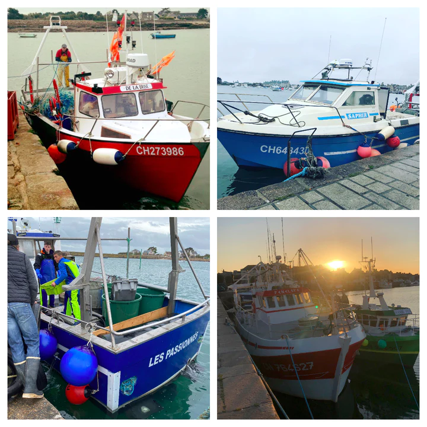
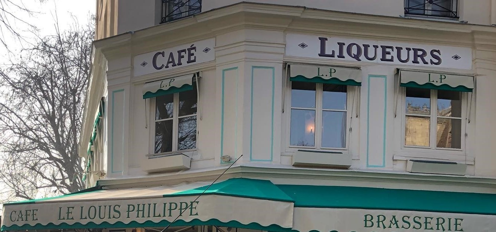

<ion-app>
  <ion-content [fullscreen]="true"
    ><br /><br />
    <br /><br /><br /><br /><br />
    <ion-card color="light">
      
      <ion-card-header>
        <ion-card-title>
          <strong
            >Vente en direct de notre bateau<br />
            Produits selon la saison, Livraisons sur Paris</strong
          >
        </ion-card-title>
        <ion-card-subtitle>
          <p>06.63.99.99.78</p>
          <p>lebateaudethibault@gmail.com</p>
          <p>www.facebook.com/lebateaudethibault</p>
          <br /><br />
          <br />
          <br /><br />
        </ion-card-subtitle>
      </ion-card-header>
    </ion-card>
    <br />
    <ion-card color="light" fill="outline" [routerLink]="['/produits']">
      
      <ion-card-header>
        <ion-card-title>Produits et promotions</ion-card-title>
        <ion-card-subtitle>Du bateau jusqu'à vous ... </ion-card-subtitle>
      </ion-card-header>

      <ion-card-content>
        Rien de plus simple !
        <br />
        <strong
          >- Retrouvez les poissons pêchés dans les différents onglets en haut
          de cette page, selectionnez les produits que vous voulez recevoir en
          vérifiant que la quantité ainsi que la taille sont bien celles
          souhaitées. <br />- Poissons grattés et vidés? précisez le, dans
          "Remarque" au moment du paiement. <br />- Une fois votre panier
          remplis, terminez par le formulaire de commande!.</strong
        ><br />
        <br />
        <ion-button class="ion-align-self-start" fill="outline">
          <ion-icon name="fish"> </ion-icon>
        </ion-button>
      </ion-card-content>
    </ion-card>
    <br />
    <ion-card color="light" fill="outline" [routerLink]="['/bateaux']">
      
      <ion-card-header>
        <ion-card-title>Bateaux</ion-card-title>
        <ion-card-subtitle
          >Les Bateaux avec lesquels nous travaillons:</ion-card-subtitle
        >
      </ion-card-header>

      <ion-card-content>
        <strong
          >Voici les bateaux avec lesquels nous travaillons, le bateau de mon
          oncle Jean-Pierre, "le Saphir", le bateau de Jérome, le "De La Brise",
          "Les Passionnés" de Ludovic et "Le Pénélope" de Yann; qui assurent 80%
          de la pêche des produits que nous vous proposons à la livraison. Le
          reste des produits sont achetés à la criée de Cherbourg à d'autres
          bateaux pratiquant la peche artisanale. Compris entre 6m50 et 14m, ces
          bateaux pratiquent la pêche artisanale en respectant la mer, par leurs
          techniques de pêches, que ce soit à la ligne pour le "Saphir", au
          filet droit et casiers pour le "De La Brise" ou à la corde pour "Les
          passionnés". Les pêches les plus longues peuvent durer 8h/10h. Nous ne
          pêchons que des poissons de saison, de manière douce et surtout en
          garantissant une qualité irréprochable.</strong
        >
        <br />
        <br />
        <ion-button class="ion-align-self-start" fill="outline">
          <ion-icon name="boat"></ion-icon>
        </ion-button>
      </ion-card-content>
    </ion-card>
    <br />
    <ion-card color="light" fill="outline" [routerLink]="['/restaurants']">
      
      <ion-card-header>
        <ion-card-title>Restaurants</ion-card-title>
        <ion-card-subtitle>Restaurants partenaires</ion-card-subtitle>
      </ion-card-header>

      <ion-card-content>
        <strong
          >Découvrez une expérience culinaire exceptionnelle dans nos
          restaurants, où la passion pour la gastronomie se marie avec des
          saveurs exquises, un service attentif, et un cadre chaleureux, créant
          ainsi l'endroit idéal pour partager des moments mémorables et
          délectables. <br
        /></strong>
        <br />
        <ion-button class="ion-align-self-start" fill="outline">
          <ion-icon name="restaurant"></ion-icon>
        </ion-button>
      </ion-card-content>
    </ion-card>
    <br />
    <ion-card color="light" fill="outline" (click)="onGoToRecettes()">
      
      <ion-card-header>
        <ion-card-title>Recettes</ion-card-title>
        <ion-card-subtitle
          >Nous vous proposons des recettes de saisons !</ion-card-subtitle
        >
      </ion-card-header>

      <ion-card-content>
        <strong
          >Explorez l'excellence des saveurs marines avec notre sélection
          raffinée de poissons d'une qualité inégalée. Suivez-nous sur les
          réseaux sociaux pour vivre une aventure culinaire unique et ne manquez
          aucune de nos créations exquises, conçues pour éveiller vos papilles à
          chaque saison.</strong
        ><br />
        <br />
        <ion-button class="ion-align-self-start" fill="outline">
          <ion-icon name="newspaper"></ion-icon>
        </ion-button>
      </ion-card-content>
    </ion-card>
    <br />
    <ion-card color="light" fill="outline" (click)="onGoToContact()">
      
      <ion-card-header>
        <ion-card-title>Contact</ion-card-title>
      </ion-card-header>
      <ion-card-content>
        <br />
        <ion-button class="ion-align-self-start" fill="outline">
          <ion-icon name="call"></ion-icon>
        </ion-button>
      </ion-card-content>
    </ion-card>

    <ion-card color="light" fill="outline">
      <ion-card-header>
        <ion-card-title>Nous contacter: </ion-card-title>
        <ion-card-subtitle>
          <p>lebateaudethibault@gmail.com<br />06.63.99.99.78</p>
          <strong>
            <p>
              <br />N'hésitez pas à nous envoyer des photos de vos délicieuses
              créations par email, messages privés, sms !
            </p>
            <p>
              Nous les partagerons sur nos réseaux pour donner des idées de
              repas à tous les clients!
            </p>
            <p>Bon appetit !</p>
            <p>
              Siege sociale : RCS Creteil B 823&nbsp;423&nbsp;97 - Siret:
              82342397500023
            </p>
            <p>
              Etablissement préparation situé : Box N°10, Criée de Cherbourg,
              50100 Cherbourg.<br />N° agrement sanitaire: FR.50.129.072.CE
            </p></strong
          >
        </ion-card-subtitle>
      </ion-card-header>
      <br />
      <ion-card-content>
        <ion-grid [fixed]="true">
          <ion-row class="ion-text-end ion-text-bottom">
            <ion-col size="auto" class="ion-text-center">
              <a href="https://www.facebook.com/lebateaudethibault">
                <ion-icon
                  name="logo-facebook"
                  class="social-icon facebook"
                ></ion-icon>
              </a>
            </ion-col>
            <ion-col>
              <a href="https://www.instagram.com/lebateaudethibault/">
                <ion-icon
                  name="logo-instagram"
                  class="social-icon instagram"
                ></ion-icon>
              </a>
            </ion-col>
            <ion-col>
              <a href="https://www.youtube.com/lebateaudethibault">
                <ion-icon
                  name="logo-youtube"
                  class="social-icon youtube"
                ></ion-icon>
              </a>
            </ion-col>
          </ion-row>
        </ion-grid>
        <span>© 2023, Le Bateau de Thibault</span>
      </ion-card-content>
    </ion-card>
  </ion-content>
</ion-app>
